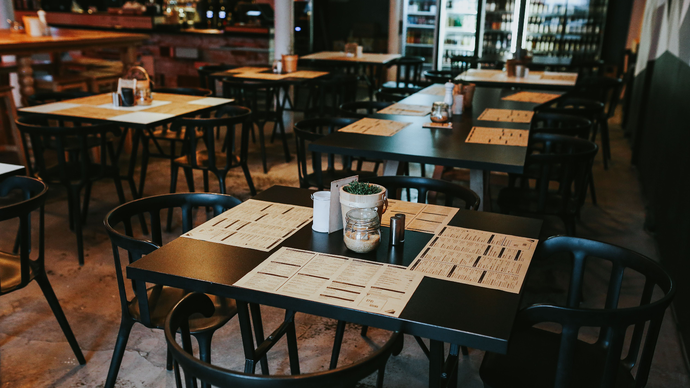
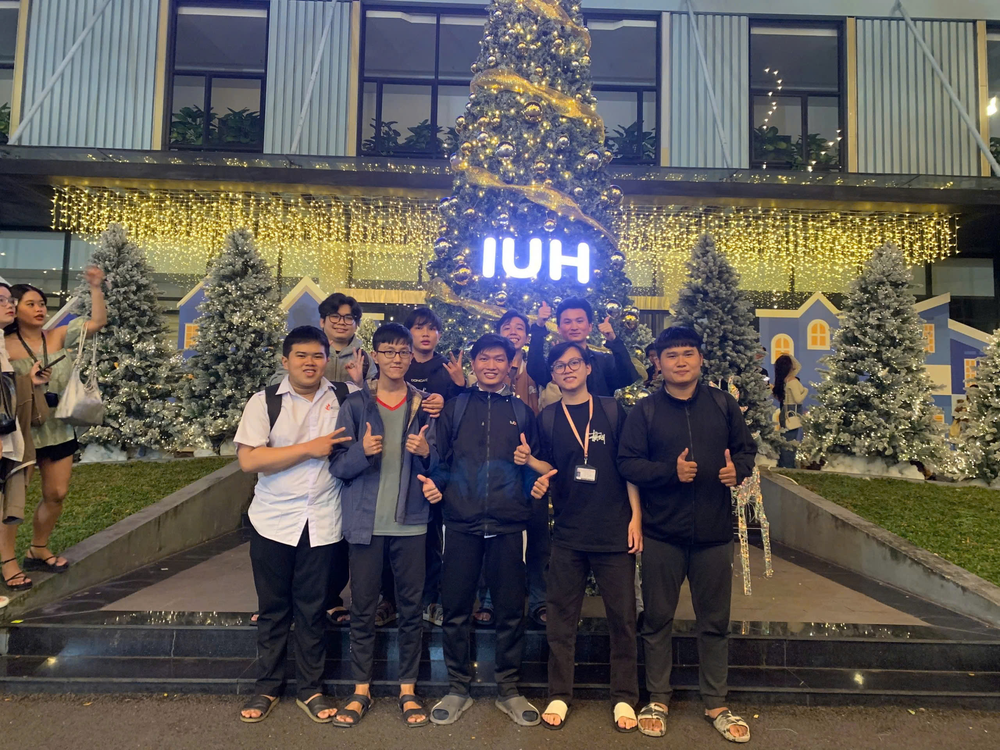

Giới thiệu tổng quan về dự án
Hệ thống đặt bàn nhà hàng là một ứng dụng hỗ trợ các nhân viên trong việc tiếp nhận và quản lý các lượt đặt bàn, cả trực tuyến (online) lẫn tại chỗ (offline). Ứng dụng giúp nâng cao hiệu quả phục vụ, giảm thiểu sai sót và tăng tính chuyên nghiệp trong quá trình vận hành nhà hàng.
Tình trạng: Đã hoàn thành 80% và không còn tiếp tục phát triển.


Thành viên thực hiện & Vai trò
- Đặng Nguyễn Minh Thiện: Phụ trách logic hoạt động và tài liệu, hiện thực phần hoạt động của quản lý
- Ngô Đăng Khoa: Captain dự án, giải quyết các tính năng, luồng hoạt chính phần mềm
- Nguyễn Đức Cường: Thiết kế giao diện, khiến mọi thứ đẹp đẽ và tương tác dễ dàng hơn
- Võ Ngọc Trung Quân: Người phụ trách các chức năng phụ, và hoàn chỉnh mọi thứ
Một số chức năng nổi bật
Chức năng 1: Đăng nhập theo tài khoản
Khó khăn, Thuận lợi và Kết quả
Khó khăn
- Hạn chế về thời gian để hoàn thành dự án đúng tiến độ.
- Thiếu kinh nghiệm trong việc triển khai các tính năng phức tạp.
- Khó khăn trong việc phối hợp giữa các thành viên nhóm.
Thuận lợi
- Có sự hỗ trợ từ giảng viên và tài liệu tham khảo phong phú.
- Nhóm làm việc đoàn kết và có tinh thần trách nhiệm cao.
- Sử dụng các công cụ hiện đại như Maven và NetBeans IDE để tăng hiệu quả làm việc.
Kết quả
- Hoàn thành 80% các tính năng chính của hệ thống.
- Giao diện người dùng thân thiện, dễ sử dụng.
- Hệ thống hoạt động ổn định và đáp ứng được các yêu cầu cơ bản.
Công nghệ sử dụng
- Ngôn ngữ: Java
- Quản lý dự án: Maven
- IDE: NetBeans
- Cấu trúc: Chuẩn Maven
- Kiến trúc: Phân lớp rõ ràng
- Giao diện: Java Swing